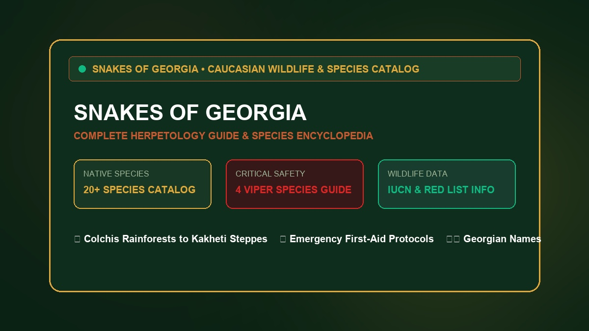

Discover Native Snakes of Georgia
From the humid subtropical rainforests of Colchis to the arid semi-deserts of Kakheti and high subalpine peaks of Svaneti — explore all 20+ native species of venomous vipers and harmless colubrids.

Macrovipera lebetina
Levantine Viper (გიურზა) • Georgia's Largest Viper
Georgia's 4 Venomous Viper Species
Only 4 species of vipers in Georgia possess venom dangerous to human health. Learn to recognize them instantly when hiking in Kakheti, Svaneti, or the Black Sea coast.
Levantine Viper
Found in dry arid hillsides of Kakheti and Kvemo Kartli. Reaches up to 1.8m. Heavy body with grey-brown markings.
Learn MoreCaucasian Viper
Inhabits humid forests of Adjara and Colchis lowlands. Vibrant reddish-orange flanks with dark zigzag pattern.
Learn MoreDinnik's Viper
Found above 1,800m elevation in high mountain alpine meadows of Svaneti, Kazbegi, and Tusheti.
Learn MoreSteppe Viper
Inhabits grassy plains and dry agricultural steppes of Shida Kartli and Javakheti. Small, greyish body.
Learn MoreBitten by a snake while hiking in Georgia?
Stay calm. Remove rings and tight clothing. Keep the affected limb lower than the heart and call Georgia's emergency services at 112 immediately.